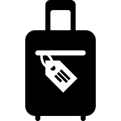

Tervezés és előkészületek
Ajánlott utazási időszak
- Legideálisabb hónapok: április, május, június — ilyenkor kellemes az idő, nem túl forró, és alkalmas városnézésre.
- Ha a fürdőzés is cél, akkor késő tavasz/nyár — viszont számolni kell a meleggel és a főszezonos tömeggel.
- Télen is lehet utazni — enyhébb az idő, kevesebb a turista, de az eső gyakoribb.
Szállás tippek
- Mivel sok turista van nyáron, érdemes előre foglalni — különösen ha központi vagy népszerű negyedben szeretnél megszállni.
- Ha spórolni szeretnél, akkor szezonon kívül (tavasz elején, ősszel) érdemes tervezni az utat: kevesebb a tömeg, jobb árak lehetnek szállásra.
Csomagolási javaslatok
- Ha tavasszal/ősszel utazol: réteges, könnyen fel-/levehető ruházat, egy könnyű kabát esőre, mert az időjárás változékony lehet.
- Nyári időpont esetén a napsütés és meleg miatt elegendő könnyű ruha, napvédő, kényelmes cipő, sok gyaloglásra számítva.
- Legyen nálad egy kisméretű hátizsák/válltáska — praktikus napközbeni sétákhoz, értékek (irata, pénz, mobil) tárolásához.

Beutazás és érkezés
Repülőtér (BCN - El Prat)
- Ez a fő nemzetközi repülőtér, jellemző célállomás Barcelonába érkezőknek.
- Érkezés után könnyen tovább lehet jutni a városba reptéri transzferrel (busz, vonat, metró).
Reptéri transzfer
- Aerobús (busz) - kb. 35–40 perc a belvárosba - kb. 5,90 € egy út
- RENFE R2 Nord vonat - kb. 25 perc a főpályaudvarokra - kb. 4,60–4,90 €
- L9 Sud metróvonal - 30–40 perc a városba, de szükséges átszállás - kb. 5,70 €, a reptéri metróra külön reptéri jegy szükséges
- Taxi - kb. 25–35 perc — kényelmes, közvetlen - kb. 20–35 €
Úti okmányok
- Mivel Spanyolország az EU része, útlevél vagy személyi okmány elegendő (ha magyar állampolgár vagy).
- Érkezéskor érdemes másolatot készíteni az okmányaidról, hátha elveszne a papír.
- Ha szezonban mész: előre foglald a szállást és a repülőtéri transzfert, mert nagy a forgalom.

Helyi közlekedés
Jegyrendszer és bérletek
- A városi közlekedést az Autoritat del Transport Metropolità (ATM) rendszere szabályozza.
- A legpraktikusabb turistáknak: T‑Casual (10 utazás) — 1 zónára 12,55 €.
Főbb közlekedési eszközök
- Metró (12 vonal, városszerte) — gyors, bárhova eljuthatunk vele.
- Buszok és villamos — azoknak, akik olyan helyekre mennének, ahol a metró nem jár.
- Vonat/városi vasút — pl. a reptéri vonattal (RENFE) bejutáskor, vagy ha a városhatáron túlra tervezel kirándulást.
Gyalogos zónák
- Sok belvárosi rész gyalogosbarát, sétálni gyakran a legjobb: a közlekedés központi részét — így érdemes kényelmes cipőt vinni.
- Gyaloglás és tömegközlekedés kombinálásával rugalmasan tudsz mozogni, nem vagy kötve metróállomásokhoz.
Közbiztonság és hasznos tanácsok
Fontos telefonszámok
- Európai egységes segélyhívó: 112
- Rendőrség: 091 - Spanyol Nemzeti Rendőrség
- Városi rendőrség / helyi közterület-felügyelet - 092
- Egészségügyi sürgősségi szám - 061
- Tűzoltóság - 080
Pénzkezelés és bankkártya használat
- A bankkártyás fizetés jellemző Spanyolországban, de érdemes készpénzt is vinni kisebb boltokhoz, piacokra, vagy buszra.
- ATM-ek elérhetők a városban — ha készpénzre van szükséged, használj megbízható automatákat.
Egészségügyi tippek és biztosítás
- Ha hosszabb időre mész, érdemes utasbiztosítást kötni — különösen egészségügyi ellátásokra és poggyászbiztonságra.
- Vigyél magaddal alapfelszerelést (pl. alap sebtapasz, fájdalomcsillapító, víz, napszemüveg, naptej), főleg ha sokat sétálsz vagy kültéren leszel.
- Ha nyáron mész, figyelj a napsütésre: napvédelem fontos a meleg miatt igyál sok vizet. Ha télen, legyen nálad réteges ruha az esték miatt.